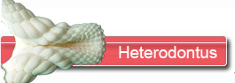
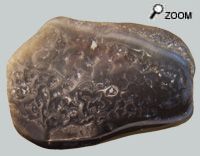
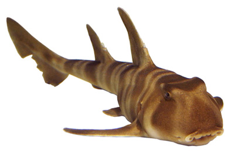

Ce petit requin reste très primitif avec ses 2 épines devant ses le nageoires dorsales. C’est un poisson qu’on rencontre à des profondeurs de 50 m à 200 m et qui vit essentiellement la nuit. Il est donc peu rencontré sur les plateaux continentaux tels qu’a pu l’être le bassin des faluns d’Anjou Touraine.
Heterodontus représente un genre de requins à l’allure facilement reconnaissable. Une part importante de sa nourriture est constituée par des invertébrés à coque dure (crabes…) et les dents se sont adaptées à ce régime alimentaire : les dents de devant agrippeuses pour saisir les proies et celles de derrière broyeuses pour les rendre digérables. Ce requin est aussi connu pour son aptitude à retrousser son estomac et le ressortir de la bouche pour éjecter les restes durs des proies.
Les critères d’identification des dents arrière sont les suivants : on observe une carène qui traverse la dent dans sa plus grande longueur. C’est le reliquat de l’apex de la cuspide principale.
La surface de la couronne comporte une ornementation qui sert surement à renforcer la surface broyeuse.
Toujours des problèmes! ...

 Des Hétérodontus fossiles sont connus en Europe jusqu’au Lutécien mais il semble qu'après l'Oligocène, le genre disparaisse d’Europe pour se concentrer dans des zones tropicales essentiellement de l’hémisphère sud.
Alors la découverte de cette dent dans les faluns d’Anjou Touraine pose question. Est-ce tout simplement, une dent remaniée?
Ou bien le genre se serait-il maintenu au-delà de l’Oligocène, avec une densité de population si faible qu’elle n’avait pas encore été détectée?
Il faudra trouver plus de matériel pour éclaircir le sujet.
|